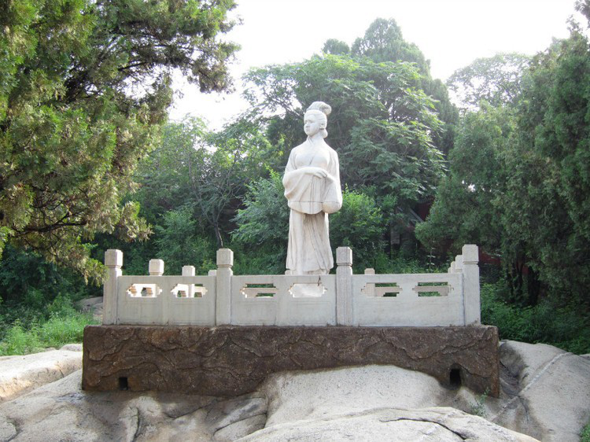

The Great Wall of China
The Great Wall of China is considered the greatest construction in China that any visitor to Beijing or China Tour should visit once. Indeed, the Great Wall is one of the oldest and most majestic man-made wonders still standing today, a symbol of ancient Chinese civilization. Let's learn about the Great Wall of China for the best experience before discovering this one-of-a-kind wonder yourself!
►Where is the Great Wall?
Great Wall
Many people think that the Great Wall of China is a construction in Beijing, but the Great Wall of China (Chinese: 万里长城 (Chinese: ), English: Great Wall of China) is actually the collective name of many groups of people. The stone ramparts are estimated to be more than 2500 years old, extending to 21196.18 km from east to west. Through many Chinese feudal dynasties. Starting from the Spring and Autumn Warring States period, countries independently built sections of the wall in the north to avoid the invasion of the Huns. When Emperor Qin Shi Huang unified China, he continued to build to link the pre-existing defenses. The building continued to be built until the Ming Dynasty. The Great Wall of China functioned as a military defense to protect China from invasions by northern nomadic tribes such as the Mongols and Manchus. Because of this important role, it was continuously extended for the next 2000 years, until the end of the Ming Dynasty, expanding to 15 provinces in China, taking the shape of the Dragon.
The map of places where the Great Wall of China passed is still preserved to this day
Over thousands of years, through the dynasties, many parts of the Great Wall have been severely damaged by both the effects of war, man and nature. The Great Wall that tourists can explore today is mainly built during the Ming Dynasty, from 1368 to 1647, starting from Hushan (Liaoning) and ending at Gia Yuguan (Cambodia). Tuc). According to archaeological studies, the Great Wall of China is about 8,850km long, but according to 2012 data, the length of the Great Wall of China is up to 21,196km.
Great Wall of China - Kim Son Linh
Today, the most famous parts of this wall of ten thousand miles are Badaling, Mutianyu, Jinshanling, Simatai, Simatai, and Jiayuguan. Cu Dung Quan, Son Hai Quan. In particular, Mu Dien Duc is the part of the wall that is recommended for tourists to visit the cheapest Beijing tour, while Kim Son Linh and Sima Dai are more suitable for hiking.
From a distance, the Great Wall looks like a white dragon lying on the mountainside
The Great Wall of China is like a poem associated with the enduring will and heroic history of the Chinese people. Therefore, for those who are passionate about studying history, following the Beijing tour from Hanoi, you will be satisfied with the knowledge gained on your own or through the stories introduced by the guide. And even if you are not too knowledgeable or interested in history, the scenery at the Great Wall is beautiful and poetic enough to make you "go once and remember forever".
►What is the secret of the Great Wall of China?
1. The Great Wall of China cannot be seen from space with the naked eye.
In the past, when humans had not explored space, many people mistakenly thought that the Great Wall of Van Ly - with its large contours on the surface of the earth - could be clearly seen from the Moon. However, the truth is that this wall cannot be seen from space with the naked eye or a camera, like comparing a hair from 3km away.
2. Visitors will be fined around 5000 yuan (VND 17 million) if caught taking bricks from the Great Wall of China
Visitors to Beijing should remember that they should only take souvenir photos here, not bring back bricks, other parts of the wall or write and draw on the wall. Otherwise, you will accidentally get into unnecessary trouble.
3. The Great Wall is not a continuous long wall
But also side walls, circular walls and parallel walls. There are also parts that have no walls but are replaced by "natural ramparts" made up of high mountains and rivers. During the Qin Dynasty (221 - 206 BC), glutinous rice flour was used as a binder for the bricks that made up the wall.
4. The story of "Manh Khuong Nu crying for the Great Wall"
Manh Khuong Nu, whose husband is a scholar, was forced to build the Great Wall of China on her wedding night by the court. When winter came, she knitted clothes for her husband and walked the length of the Great Wall to inquire and received bad news that her husband had died and buried under the Great Wall. She cried for 3 days and 3 nights, tears mixed with blood. Meng Jiangnu's tears resounded 800 miles away from the Great Wall, knocking down a section of the wall, revealing her husband's dead body. After her husband's funeral, she jumped into the sea to commit suicide. This story becomes one of the four most famous folk legends in Chinese culture, next to Niu Lang Zhi Nu, Bach Xa Truyen and Luong Son Ba Chuc Anh Dai.
Statue of Manh Khuong Nu at Son Hai Quan - Great Wall of China
On this day, tourists taking a cheap China tour to the Great Wall of China can visit the shrine to worship Manh Khuong Tu in the city wall of Son Hai Quan district, Hebei.
5. During the Cultural Revolution (1966-1976) many bricks of the Great Wall were used to build houses, farms, and reservoirs.
This is also one of the reasons the Great Wall of China was destroyed by man-made. Not only that, parts of the Great Wall in Gansu and Ningxia are likely to disappear after 20 years, due to desertification and human land use.
6. The most famous part of the Great Wall – Badaling is visited by more than 300 heads of state and VIPs from all over the world
The first of them was Soviet statesman Klim Voroshilov, 1957. President Barack Obama, Queen Elizabeth II, Tom Cruise or Jennifer Lawrence are also famous figures who have visited this place.

"Werewolf" Hugh Jackman also visited the Great Wall of China
7. The main workforce that made up the Great Wall of China included soldiers, farmers, and prisoners and criminals.
Estimates number up to 800,000 people. Thousands of people died during the construction of this Great Wall, some of which were buried under the foundation of the wall, so much so that the Great Wall has been dubbed the "World's Longest Cemetery". However, oral horror stories such as bricks and mortar that built the Great Wall of China mixed from human bones are completely untrue. Mortar for the Great Wall consists of many different materials through the ages, from rice flour, clay, stone to brick, wood, limestone...
Join the Beijing tour to the Great Wall and you will also be told by your guide a lot of interesting things around this longest wall in the world!
►What to visit in the Great Wall?
The Great Wall of Badaling - Great Wall of China
Bat Dat Linh is the best restored section of the Great Wall, visited by most tourists traveling to Beijing, 80km northwest of the center of Beijing, in the territory of Yanqing district, Beijing. The section of the Great Wall that runs through this site was built in 1505 during the Ming Dynasty. This section of the Great Wall at Badaling was the first sightseeing part to be opened, in 1957. Seen from afar, Bat Dat Linh is curved, gently sloping, like a white dragon's back winding on the immense green mountainside, overwhelmed so many tourists traveling to Beijing.
The Great Wall of Jiayuguan is located quietly in the middle of the Gobi desert, not as crowded and bustling as in Beijing, more suitable for hiking activities.
Jiayuguan Gate, also known as Jiayuguan Fort, is the first gate in the west of the Great Wall of China, Gansu Province, China. This is one of the main gates of the Great Wall, along with Cu Dung Quan and Son Hai Quan. This place is known as "the biggest gate in the world", built in 1372, during the Ming Dynasty. This gate was also an important point on the ancient Silk Road.
Gia Yuguan in the desert sun
Legend has it that when Gia Yuguan was new to the design drawings, the official in charge asked the designer to estimate the number of bricks needed. This person has meticulously planned, it takes 99,999 + 1 brick to build the rampart. When the fortress is completed, there is exactly 1 stone left over. That brick is still solemnly placed on the gate of Gia Duc Quan.
Ai Son Customs Gate - Great Wall of China

Hai Than Temple - Son Hai Quan
Son Hai Quan or Du Quan, is one of the three main gates of the Great Wall. The place where this wall borders the Bohai Sea is called "Lao Long Tou". This gate is called "The first gate under Heaven". Chinese tourists coming to Son Hai Quan always find these 3 attractive places:
The Great Wall of China Museum is located in the fortress, displaying a number of pictures, relics, clothes and stories surrounding this construction.
Great Wall of China Museum
Lao Long Tou (Old Dragon Head) is the fortress part of the Great Wall bordering the Bohai Sea. This name comes from the image of the Great Wall of China winding like a dragon, but the part adjacent to the Bohai coast looks like a dragon's head bending down to drink water.
Lao Long Tou - Son Hai Quan
Temple of Manh Khuong Nu. This is the temple of the legendary Manh Khuong mentioned in the Secret of the Great Wall.
Statue of Manh Khuong Nu - One of the symbols in Son Hai Quan
Not only these 3 places, following a cheap China tour you will also be able to visit many beautiful scenes with historical significance associated with China in this Great Wall.
►How to move to the Great Wall?
Coming to Beijing tour from Hanoi, visitors to Beijing can fly directly from Noi Bai international airport. There are many airlines that fly directly to Beijing such as Viet Nam Airlines, Vietjet, China Southern Airlines, China Airlines... this way of travel is suitable for the elderly and children, it only takes a short time and you're ready to go. Come to this beautiful city of Beijing.
If you take the Beijing tour to the Great Wall, you will be picked up by a guide to your place without having to worry about traffic, but if you go by yourself, the Great Wall is about 200km from the city center, so please Choose the train or bus as a means of transportation to this tourist destination.
Travel time map from Central Beijing and between sections of the Great Wall near Beijing
►What to keep in mind when coming to the Great Wall of China?
To fully explore this work, visitors to Beijing need to have good physical strength, you will have to walk a lot, so you should not wear high heels or sandals. Please choose sports shoes or climbing shoes to facilitate the journey to explore the Great Wall.
Not only has the slopes, the Great Wall also has countless towering steps, requiring you to have good physical strength.
Visiting the Great Wall in the morning you should be ready to pack a coat, sunscreen, umbrella, hat because the morning here is very sunny, if you visit in the evening, you should bring a thin coat to avoid catching a cold. cold. In winter, you should wear a warm coat. Another note is that the journey to conquer the Great Wall is quite long, so bring water or snacks to eat along the way.
►When should you go to the Great Wall of China?
Whether it's Winter, Spring or Autumn, visiting the Great Wall at any time of the year, Beijing tourists can also fully admire the scenery here. In spring, hundreds of flowers bloom, the Great Wall is soft and gentle like a white dragon lying among flowers. In the summer, the yellow sun shines gently, the leaves turn bright red in autumn, making the peaceful scene more romantic than ever. In the winter, the Great Wall is a bit lonely, carrying the cold of the North, but standing in the middle of the sky here, watching the white snow cover the whole long wall, this feeling is worth the trade-off. cold isn't it?
The Great Wall of China wears a romantic color when it comes back
The Great Wall of China is covered with white snow when winter comes